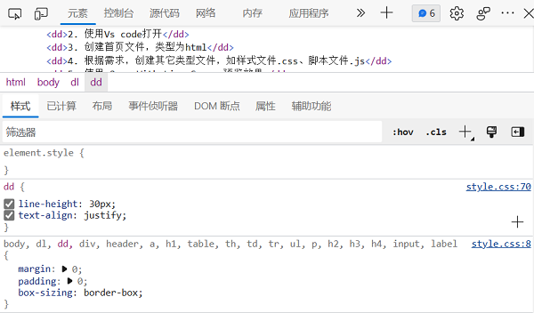

- 内容
- 开发流程 Workflow
- 调试 Debug
- 测试 Lighthouse
开发原则 Rules
- 三分离
- . 专业的事交给专业的人去做
- . 结构HTML5、样式CSS3和行为JavaScript三分离
-
H5C3JS
开发流程 Workflow
- 过程
- 1. 创建空白项目文件夹
- 2. 使用Vs code打开
- 3. 创建首页文件，类型为html
- 4. 根据需求，创建其它类型文件，如样式文件.css、脚本文件.js
- 5. 编辑、保存并使用 Open With Live Server预览效果
- 6. 返回Vs code，重复编辑、保存等，完善项目
- 7. 持续测试并完善
- 8. 发布
- 9. 运维
- [ ]
- . 不需要每次使用Open With Live Server，保持浏览器页面不要关闭即可实时更新
- . 分屏开发，更加高效
普通调试 Debug
- . 要学会 偷
- 说明
- 1. 在浏览器中，按 F12 打开浏览器的检查功能页，或鼠标右键单击 -> 检查
- 2. 在检查功能页中，可以
- . 选择元素
- . 切换移动端和桌面端
- . Element：检查文档/元素结构
- . Console：查看控制台输出：业务开发请多使用log调试
- . Network：网络情况，各种资源图片、样式文件等加载情况
- . Local Storage：本地存储
- . Security：安全等信息
- 3. 如果预期的效果没有出现，可以拾取某个元素，在 样式 选项卡中查看具体的信息，如样式的使用和继承情况；在 已计算 选项卡中可以查看完整的样式
- 4. 根据检查情况修改并完善项目
- 
真机调试 Debug
- 说明
- . 本着移动优先的原则，通常要查看项目在真机上的效果，所以真机调试的步骤比不可少[除非明确项目的定位就是桌面端]
- 环境需求
- . 安装Vs code
- . 安装插件 Live Server
- . 开发电脑和手机链接同一个WiFi
- 环境配置
- 1. 查看本机IP地址；按Win+R，打开命令运行窗口，输入cmd，打开控制台/小黑屋，输入ipconfig，查看本机IPv4地址
-
C:\Users\cnplaman>ipconfig Windows IP 配置 以太网适配器 VMware Network Adapter VMnet1: //VMware 以太网适配器 VMware Network Adapter VMnet8: //VMware 无线局域网适配器 WLAN: 连接特定的 DNS 后缀 . . . . . . . : IPv6 地址 . . . . . . . . . . . . : 2408:8220:3434:3330::2 IPv6 地址 . . . . . . . . . . . . : 2408:8220:3434:3330:f2c:629f:80e4:3bee 临时 IPv6 地址. . . . . . . . . . : 2408:8220:3434:3330:dc54:f31f:ae4f:643e 本地链接 IPv6 地址. . . . . . . . : fe80::62d7:b476:7de2:1bef%8 IPv4 地址 . . . . . . . . . . . . : 192.168.1.3 子网掩码 . . . . . . . . . . . . : 255.255.255.0//here 默认网关. . . . . . . . . . . . . : fe80::1%8 192.168.1.1 以太网适配器 蓝牙网络连接: //Bluetooth C:\Users\cnplaman> - 2. 打开Vs code，点击右下角管理按钮，选择设置setting，或者直接按CTRL+,
- 3. 选择扩展Extension里的Live Server Config，修改主机host为查询到的IPv4地址

- 4. 重新启动Vs code
- 真机调试
- 1. 使用 Open With Live Server打开浏览器
- 2. 在浏览器的页面中，右键单击 -> 为此页面创建QR代码，打开一个二维码，使用手机扫码，即可在手机端预览页面效果
- 3. 调整并真机预览
- [ ]：真机查看效果时，不需要每次扫码，手机端页面不要关闭即可保持实时更新
-
按 win+i 打开系统设置，在网络属性中查看IPv4地址
测试 Lighthouse
- 说明
- . Lighthouse 是一个开源的自动化工具，用于改进网络应用的质量
- . 是 Chrome 扩展程序： 检查->Lighthouse
- . 对HTML页面运行一连串的测试，生成一个有关页面性能的报告
- . 参考失败的测试，采取措施改进应用

- [] 结合浏览器的调试功能，指出下列代码片段的问题
-
<nav id="main" id='nav'> <ul class="nav-wrap'> <li class="logo main"> <img src="./imgs/1.jpg"> </li> <li style="color:#f40">item1</li> <li>item2</li> <li>item3</li> <li>item4</li> <li>item5</li> </ul> </nav>